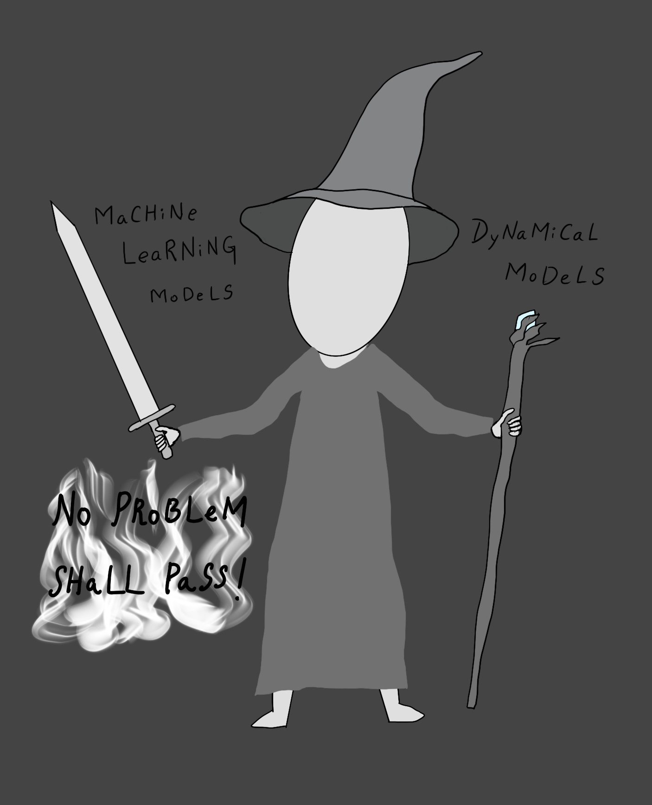

This site is built with [fastpages](https://github.com/fastai/fastpages).

<!---
<table border="0">
  <tr>
    <td> <a href="images/pomocoe_dark.jpg"> </a></td>
    <td> Welcome to the Blog of Post-Modern Control Engineer. A blog on the musings around feedback control systems in the rapidly changing modern tech world. If you are new, check the post <a href="https://krishnans14.github.io/feedback-control/musings/2020/11/23/About-The-Blog.html"> About the Blog</a> to know more. <br>
    </td>
  </tr>
</table>
-->

<div style="width:image width px; font-size:80%; text-align:center;">
   <br>
  Welcome to the Blog of Post-Modern Control Engineer. If you are new, check the post <a href="https://krishnans14.github.io/feedback-control/musings/2020/11/23/About-The-Blog.html"> About the Blog</a> to know more.
</div>

# Posts
